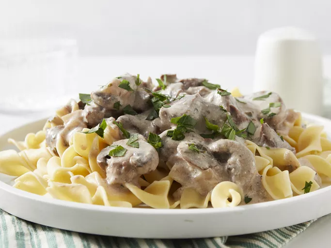

Slow Cooker Beef Stroganoff

Description
A deliciously rich and creamy beef stroganoff that's easy to prep in a slow cooker with little-to-no fuss.
It smells wonderful and is tasty like no other stroganoff you've had before thanks to the addition of cream cheese along with the sour cream.
Serve over hot, buttered flat noodles.
Ingredients
- Onion
- Beef
- Canned Soup
- Seasonings
- Herbs
- Wine
- Mushrooms
- Cornstarch and Flour
- Sour Cream and Cream Cheese
Steps
- Spread beef stew meat into bottom of slow cooker crock; season with salt and pepper. Layer onion over the beef. Pour mushroom soup and water over the beef; add chives, garlic, Worcestershire sauce, and beef bouillon.
- Whisk red wine, cornstarch, and flour together in a small bowl; pour over the mixture in the slow cooker.
- Cook on Low for 6 to 7 hours. Stir sour cream, mushrooms, cream cheese, and parsley into the beef mixture; continue cooking for 1 hour more.
- Serve over pasta